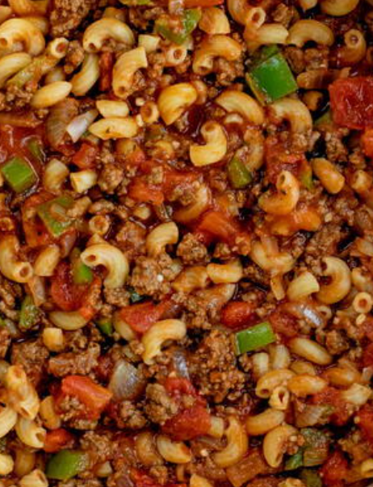

Goulash

Just some ordinary goulash
This is a simple recipe for goulash, which roughly can be described as a tomato and ground beef based tasty pot of goodness.
This recipe can be used when needing to make a nice big meal that everyone can enjoy together.
Ingredients
- A big 'ole can of tomatoes
- A nice big yellow onion, juilenne
- Two cloves of garlic, minced
- A green pepper, juilienne
- A red pepper, choppped
- 1 pound of ground sirloine
- A big bag of pasta
- Whatever spices you want
Steps
- First, throw onions in pan with some oil
- Cook the onions til smelling good, somewhat transparent
- Thrown in the garlic
- Add the sirloine and cook til brown
- Add the peppers
- Add the tomatoes
- Add a whole bunch of spices
- Boil the pasta separately and dump that in the pan
- Mix it all up
- Eat the tasty meal